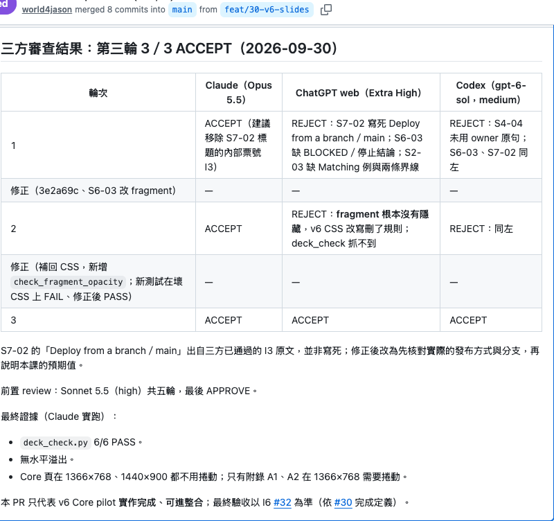

GOAL / EPIC
互相喜歡才配對
Parent issue｜這個 Goal 說明三張 ticket 為什麼存在。
Sub-issues
#1Like／PassOpen
#2配對列表Open
#3雙向喜歡才配對全程範例
一個想法，怎麼經過敏捷／看板流程，成為交付的軟體？
Parent issue｜這個 Goal 說明三張 ticket 為什麼存在。
上線兩週，出現 10 對互相喜歡的配對（教學範例，門檻依現況設定）。
錯誤配對率＝0（核對錯配紀錄）。
聊天、推薦、解除配對。
結果導向／可驗證／範圍清楚
壞 Goal：做完喜歡、配對、聊天功能。
雙向喜歡才配對
單向喜歡不能算配對。
支援「互相喜歡才配對」。
判斷雙向喜歡並建立配對。
A｜A 喜歡 B → 不配對
B｜B 也喜歡 A → 成功配對
C｜重複喜歡 → 不重複配對
聊天、推薦、解除配對。
A／B／C 三情境測試結果。
依賴：無阻擋（Like 資料用測試資料）。DoD 屬於專案層級，所有 ticket 共用；ticket 不放 DoD。
| 項目 | 回答的問題 | Matching #3 例子 |
|---|---|---|
| AC | 這張 ticket 做對了嗎？ | A／B／C：單向不配對、雙向配對、重複喜歡不重複配對。 |
| DoD | 整個工作真的完成了嗎？ | #3 的 PR 已審查、上線後檢查、未超範圍、既有功能沒壞；專案層級，所有 ticket 共用。 |
| Out-of-scope | 這次明確不做什麼？ | #3 不做聊天、推薦、解除配對。 |
Ticket 是否寫得足以開始？
feature/3-mutual-match→commit→PR只實作 #3 範圍，PR 附變更說明與自我檢查。
檢查 code、architecture、regression、maintainability。
AC 是否成立？檢查 observable behavior、AC 與 edge cases。
| AC | 預期行為 | 證據 | 狀態 |
|---|---|---|---|
| A | A 喜歡 B，B 未喜歡 A → 不配對 | 初測：顯示 Match；修正後重測：未顯示 Match | 初測 FAIL 重測 PASS |
| B | B 也喜歡 A → 成功配對 | 雙方顯示 Match | PASS |
| C | 重複喜歡 → 不重複配對 | 只有一筆配對 | PASS |
狀態：PASS／FAIL／NOT RUN
做對的東西了嗎？
若發現：「功能完全符合 AC，但這根本不是我們現在需要的東西。」
Goal 成敗看上線後訊號：兩週 10 對互相喜歡；護欄為錯誤配對率＝0（核對錯配紀錄）。
AC＋project-wide DoD 是否成立？
A／B／C 的 AC 通過。
Project-wide DoD（所有 ticket 共用）在固定週期內規劃與檢視一批工作。
工作持續流動；本例一次只做一張（WIP=1）。
Kanban 管工作流動，不限定票型；User Story 起源於 XP，Scrum／Kanban 都不要求固定格式。
第一段的每一步，實際上落在什麼工具上？
版本紀錄
存檔點共享與審查的平台
共享資料夾＋審查室Goal 說明底下 tickets 為什麼存在。
feature/3-mutual-match → main
| 概念 | GitHub | 看板 |
|---|---|---|
| Goal（大票） | parent issue（Epic） | 泳道標題，不佔欄位 |
| Ticket（子票） | sub-issue | 卡片 |
| Brainstorming → Goal | 開 parent issue | — |
| Ticket Refinement / Backlog | 開 sub-issue、寫內容 | Backlog |
| Ready | Ready 標記 | Ready |
| Developer | branch／commit | Dev |
| PR Review | PR review | Review |
| QA / Verification | PR 上的證據／CI | QA |
| Product / Goal Check | 對照 parent Goal；接受後 merge | Product Check |
| 退件 | PR Request changes；QA fail；Goal issue → Ticket Refinement / Goal | Review／QA → Dev；Product Check → Ticket Refinement / Goal |
| Done | sub-issue 關閉 | Done |
changed ≠ committed ≠ pushed ≠ merged ≠ deployed ≠ verified
流程不變，角色換成 Agent 會長怎樣？
| 階段 | 步驟 | 負責 Agent | 傳下去的產物 | 存放位置 |
|---|---|---|---|---|
| 規劃 | Brainstorming → Goal → Ticket Refinement / Backlog | PO/PM Agent | 想法 → parent Goal → sub-issues | Issue／看板 |
| 開發 | 依票實作 | Developer Agent | PR | branch／PR |
| 審查 | PR Review：code／architecture／regression／maintainability | PR Review Agent | review 意見 | PR |
| 驗證 | QA / Verification：依 AC 驗證 | QA Agent | A／B／C 證據 | PR |
| 接受 | Product / Goal Check → Human Gate | PO/PM Agent | 對照 parent Goal 的決定 | Issue／看板 |
| 退件 | PR／QA fail → Developer；Goal issue → Ticket Refinement / Goal | PR Review／QA／PO-PM Agent | review 意見／Goal 決定 | PR／Issue／看板 |
概念參考：ChatDev（OpenBMB，arXiv:2307.07924）。產物落在 GitHub，不靠對話傳遞。
Agent 取代工作；責任仍由人保留。

提出簡報工作

Developer Agent：Codex
要求修改（Request Changes）

發現 fragments 未隱藏（regression）
修正 fragments 顯示問題，合併 PR #37
Owner 拒絕接受
「偏離主軸」
重寫成這一版
只用一個 Agent、用聊天推進，哪裡會壞？要改成什麼？
| 方式 | 誰決定步驟 | 狀態存在哪 | 怎麼知道做完 | 換 Session 之後 |
|---|---|---|---|---|
| 一問一答 | 人逐步提問 | 對話 | 人看回覆 | 新對話重說 |
| Agentic Workflow | 固定 SOP | 流程執行記錄 | 流程走完 | 依流程記錄接續 |
| AI Agent | Agent 自行決定 | Agent context | Agent 回報 | 依 context 保存方式 |
| Work-driven 多 Agent | 工作流與角色分工 | GitHub 工件 | PR Review／QA／Product Check | 讀票接手 |
概念參考：「一般使用 AI 的方式／Agentic Workflow／AI Agent」分類圖。Work-driven 結合固定流程的可控與 Agent 的彈性。
概念參考：Single／Multiple Agent 示意圖。
工作單位是 ticket：Agent 從 Ready 拉取（WIP=1），各站依 AC／DoD 交接 PR、review 與證據。Product Check 等 Human Gate 放行；新 Session 讀票接手。
第四段的 work-driven 為什麼要這樣設計？每個原則具體怎麼做？
狀態藏在對話裡
GitHub Issue／看板留下工作狀態
新 Session 讀票，不讀聊天「功能完全符合 AC，但這根本不是我們現在需要的東西。」
#3 連回 parent Goal；釐清後重排 Backlog，需要改 Goal 時交 Human Gate 決定。
把前面全部組起來，是一套什麼系統？
#1、#2 等待；#3 依序經 Developer、PR Review、QA、Product / Goal Check Agent，Human Gate 放行後完成（WIP=1）。
多做了聊天室，超出 #3 範圍。
請移除聊天室；退回 Developer。